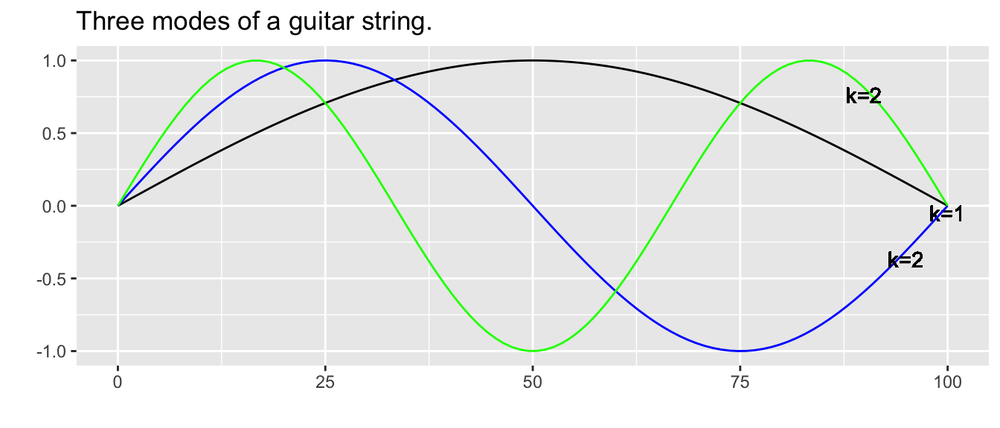
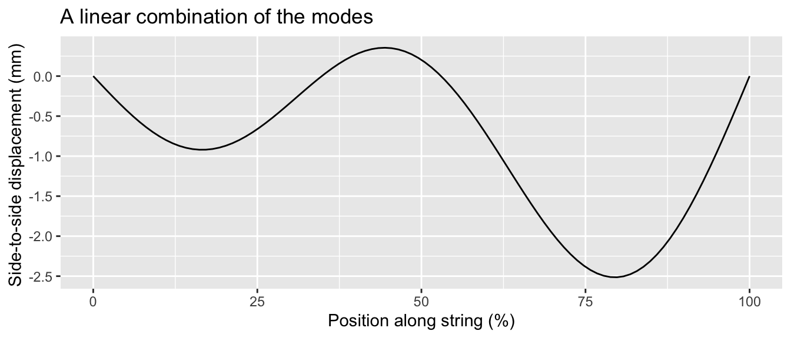
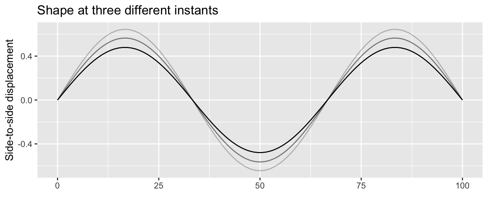

10 Functions with multiple inputs
We can use linear combination and function multiplication to build up custom functions from the basic modeling functions. Similarly, linear combination and function multiplication provide ways to construct functions of multiple inputs.
10.1 f(x) times g(t)
For example, soon after a guitar string is plucked it conforms to a sinusoid pattern of displacement from the straight-line connecting the two fixed ends of the string: one set by finger pressure on the fret and the other at the bridge.
For a string of length \(L\), the string displacement is a function of position \(x\) along the string and is a linear combination of functions \[g_k(x) \equiv \sin(k \pi x /L)\] where \(k\) is an integer. A few of these functions are graphed in Figure ??.

Shapes of the sort in Figure ?? are a stop-motion flash snapshot of the string. The string’s shape also changes in time, so the string’s displacement is a function of both \(x\) and \(t\). The displacement itself is a sinusoid whose time period depends on the length and tension of the string as well as the number of cycles of the spatial sine: \[g_k(x, t) \equiv \sin(\frac{k \pi}{L} x) \ \sin(\frac{k \pi}{P}t)\] Figure ?? shows a few snapshots of the 1.5 cycle string at different moments in time, and the motion of the linear combination.

10.2 Two-variable modeling polynomial
In Section 9.3 we introduced the low-order polynomial, either \(g_1(x) \equiv a_0 + a_1 x\) or \(g_1(x) \equiv b_0 + b_1 x + b_2 x^2\) as a general-purpose way of generating a function with a smoothly curved shape. The same applies in constructing simple functions of two variables.
Almost always, you should use at least a first-order polynomial, which is: \[h_1(x, y) \equiv a_0 + a_x x + a_y y\] But there is an important extension of this, using what’s called a bilinear term or, more evocatively in statistics, an interaction term. This is \[h_2(x, y) \equiv \underbrace{b_0}_\mbox{intercept} + \underbrace{b_x\, x + b_y\, y}_\mbox{linear terms} + \underbrace{b_{xy}\,x\, y}_\mbox{bilinear term}\]
The bilinear term arises in models of phenemona such as the spread of epidemics, the population dynamics of predator and prey animals, and the rates of chemical reactions. In each of these situations one thing is interacting with another: a predator killing a prey animal, an infective individual meeting a person susceptible to the disease, one chemical compound reacting with another.
Under certain circumstances, modelers include one or both quadratic terms, as in \[h_3(x, y) \equiv c_0 + c_x\, x + c_y\, y + c_{xy}\,x\, y + \underbrace{c_{yy}\, y^2}_\mbox{quadratic in y}\] The skilled modeler can often deduce which terms to include from basic facts about the system being modeled. We’ll need some additional calculus concepts before we can explain this in a straightforward way.
Explain why we are not using letter subscripts on the scalars in the linear combination.
10.3 Function composition (not!)
We left function composition out of the list of ways to build multivariable functions out of simpler functions with a single input.
For instance, consider the two functions \(f(x)\) and \(g(t)\). The composition \(f(g(t))\) has only one input: \(t\). Similarly, \(g(f(x))\) has only one input: \(x\).
EXERCISE:
In Section 9.2 you saw a function giving the declination of the sun as a function of day of year, and length-of-day as a function of latitude and sun’s declination. Putting these together let’s us assemble day-length as a function of latitude and day of year.
Give function. DRAW CONTOUR PLOT, take slices. Day length as seen by a migrating bird. [Plug in a simple sinusoid for latitude to reduce the function to day-length versus day-of-year.]
Many printed tables are meant to be used as functions; you plug in the input values and read off the output. Here’s a table published by the National Oceanic and Atmospheric Administration for the heat index, a way of summarizing the perceived comfort (or discomfort) of summer-like weather conditions.

Q-15: A) What are the inputs to the heat-index function
temperature and relative humidity (+) []
temperature and wind speed [Those are the inputs to the wind-chill function, not the heat index.]
temperature, latitude, and longitude [The heat index doesn’t depend on location.]
The table actually shows three different functions:
- The heat index in \(^\circ\) F.
- The heat index in \(^\circ\) C.
- A caution warning level.
Q-16: B) For inputs of 70% relative humidity and \(88^{\circ}\) F, what are the outputs of the three functions?
\(100^{\circ}\) F, \(38^\circ\) C, and “extreme caution”. (+) []
\(100^\circ\) F, \(38^\circ\) C, and “danger”. [Check again!]
\(100^\circ\) F, \(33^\circ\) C, and “extreme caution”. [33C does is not the same temperature as 100F.]
Q-17: C) Holding the relative humidity at 70%, how much would the ambient temperature have to increase (from \(88^\circ\) F) to change the caution-level output to “dangerous”?
Increase by \(2^\circ\) F (+) []
Increase by \(6^\circ\) F [It looks like you’re increasing the humidity to the point where the heat index is \(106^circ\) F. But we asked you how much the temperature input has to change, not the heat-index output.]
Increase relative humidity to 80%. [It’s true that at \(100^\circ\) F and 80% humidity, the caution-index is “dangerous”. But the problem specified holding humidity constant.]
Q-18: D) From a starting point of \(88^\circ\) F and 70% humidity, what is the slope of the increase in heat index when moving to 80% humidity.
\(6^\circ\) F per 10 percentage points humidity (+) []
\(6^\circ\) F [A slope is always “rise over run”. You’ve got the rise right, but what about the run?]
\(6^\circ\) F per 80% humidity. [The slope is the change in output divided by the change in input, i.e. “rise over run”. 80% is the humidity at the endpoint, but the run is the change in humidity from the starting point to the endpoint.]
Q-19: E) What is the heat-index output when the inputs are 52% relative humidity and \(91^\circ\) F? Choose the best answer.
\(98.4^\circ\) F (+) [Of course, the 4 in the last digit is sketchy, but it’s reasonable to calculate the interpolated output by averaging over neighboring outputs.]
\(101^\circ\) F [That’s the output at 55% humidity and \(92^\circ\) F.]
The table doesn’t say. [While it’s true that there is no table entry specifically for 52% and \(91^\circ\) F, you can make a very reasonable guess by interpolation, that is, reading between the rows and columns.]
Q-20: True or false: The caution-level output could have been presented as a function of just one variable, rather than needing both temperature and humidity both.
TRUE (+) [The caution-level output is not a function of ambient temperature alone or of humidity alone. But if you know the heat-index, you know that caution level exactly.]
FALSE [Notice that the caution-level output is the same for any given level of the heat index, regardless of the ambient temperature or humidity separately.]
The US National Weather Service also publishes a heat index graphic, the one below.
{kind=link}
Contour plot of length of day versus latitude.
EXERCISE:
Recall the Pythagorean theorem: \(C^2 = A^2 + B^2\). Let’s write this as a function that takes as inputs the lengths of the two legs and produces as output the length of the hypotenuse.
\[\mbox{hypotenuse}(x, y) \equiv \sqrt{\strut x^2 + y^2}\]
This can be seen as a composition of a function \(f()\) together with a linear combination of two power-law functions \(g()\) and \(h()\) of different inputs. What is the function \(f()\)? What are \(g()\) and \(h()\)? What are the scalars in the linear combination?
EXERCISE: What are the two pieces in this piecewise function of two variables?
bigger <- makeFun(ifelse(y > x, y, x) ~ x + y)
contour_plot(bigger(x,y) ~ x+y, domain(x=c(-2,2), y=c(-2,2)))